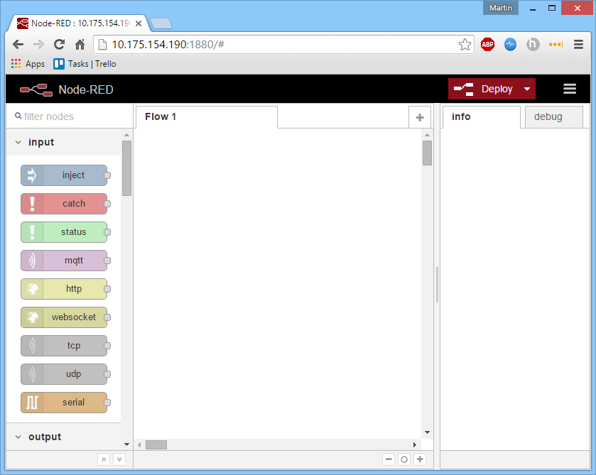

Node-Red Flow: Temperature to LCD
Assemble Sensors
-
Install the Grove Base Shield onto the Intel® Edison Arduino expansion board.
Connect Grove Temperature Sensor to analog pin A0 of the Grove Base Shield.
Connect Grove LCD display to one of the I2C pins.

Install and run Node-RED
Log into the Intel Edison over serial like in Step 3 of Module 1.
First get the ip address of the Edison:
$ ifconfig wlan0

The ip address is the address following inet addr. In the case above it is: 10.175.154.190, however yours will be different. Remeber this address for the following step.
Install Node-RED with:
$ npm install -g node-red
Once Node-RED is installed you will have to add the custom nodes that will be used to interact with the temperature sensor and LCD display
To install the Node-RED nodes needed use:
$ npm install -g node-red-contrib-grove-sensors-edison
You should now run the Node-RED server by typing:
$ node-red
Program the first flow
Make sure that your laptop is connected to the same WiFi network as your Edison and navigate to Edison IP: port 1880 in your browser. If you were using the IP address above you would enter 10.175.154.190:1880 into your navigation bar.

Create a flow where a grove temp sensor node outputs into a function node which outputs into the grove-lcd node.

Double click on the Temp node and assign A0 as the pin and interval as 1000 to take a temperature reading every 1000ms. Double click the function node and enter the following code:
Click Deploy in the top right corner
Flow source code
Any flow in Node-RED can be exported / imported as a JSON object. To create the JSON, select the nodes you wish to export, and select Export -> Clipboard from the drop down menu. The code for the above flow is displayed below. To import it into your work space copy the text, hit Ctrl-I in the Node-RED workspace and paste the text in. This method provides a simple way to share your flows with other developers.
NOTE: if the JSON references any custom nodes those will have to be installed first.